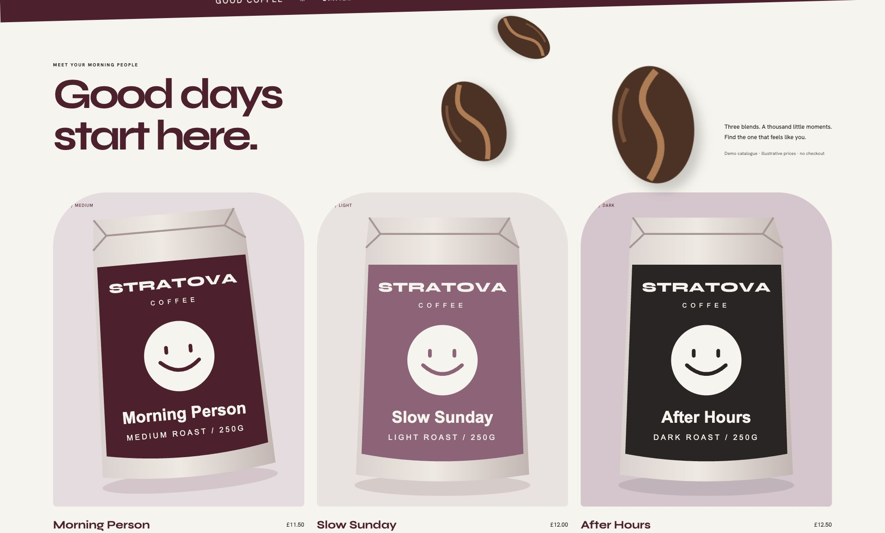

Stratova Coffee.
Made to be remembered.
Stratova Coffee is a fictional coffee brand created to explore how a cohesive visual identity, original illustration and considered motion can shape a website.
Web Design · Development · Motion

Small daily rituals. A little personality.
Stratova’s wine, ivory and taupe palette brings the concept into the agency’s brand world. A striped cup character, oversized beans and three illustrated packages connect the story from the first screen to the final sip.
Built to explore.
The static website includes accessible product dialogs, a transparent preference matcher, mobile navigation, reduced-motion support and a separate guided presentation. No checkout, invented business results or real customer data.

This is a self-initiated fictional concept, not commissioned client work. Prices are illustrative. The working brand name has not been checked for trademark availability.